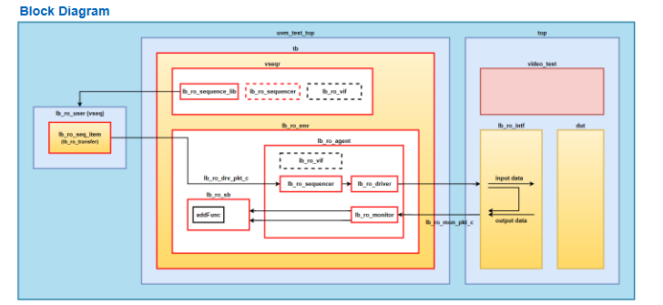
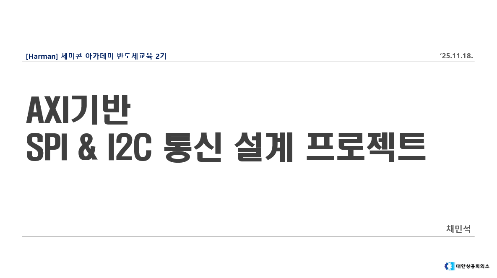
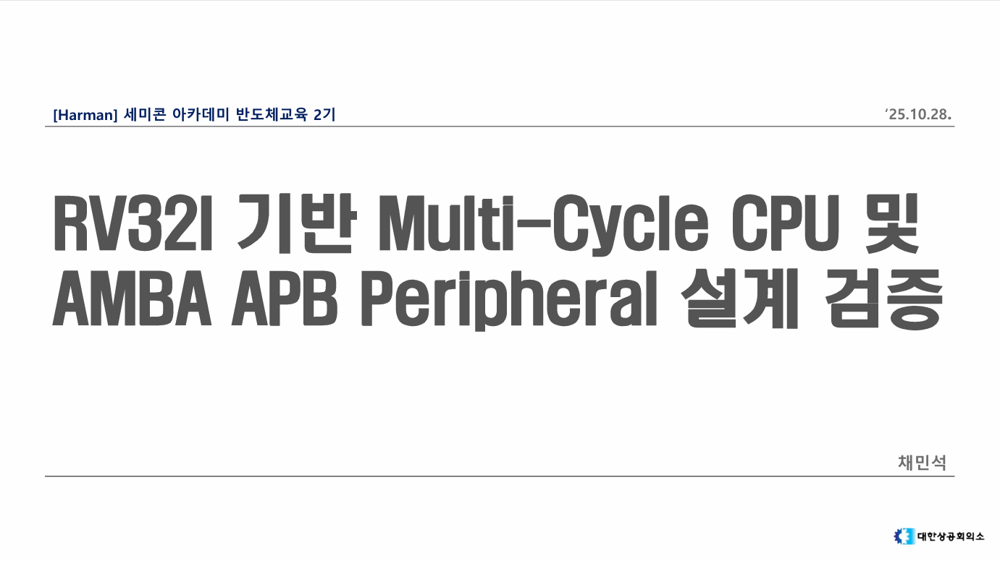
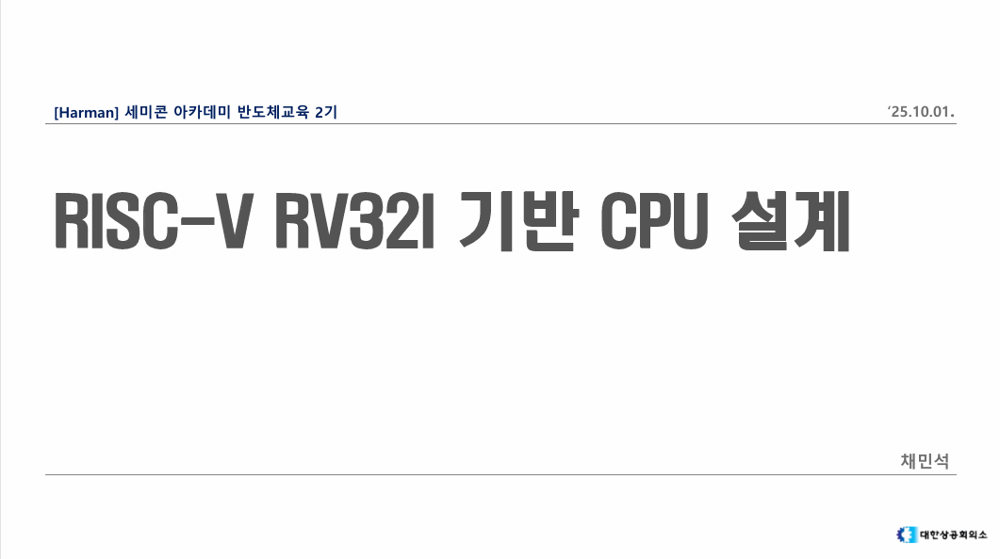
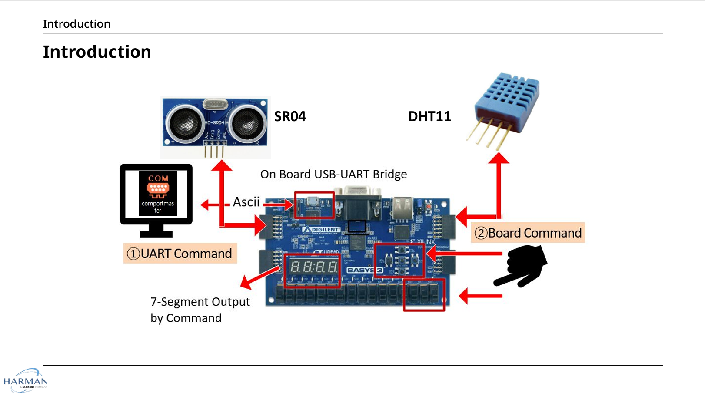

UVM Verification
Linebuffer UVM Verification
Line Buffer를 Frame Size와 Data Mode에 따른 UVM 환경 검증


Line Buffer를 Frame Size와 Data Mode에 따른 UVM 환경 검증

FPGA를 이용하여 이미지 데이터를 모니터로 출력하는 VGA 타이밍 컨트롤러 및 필터 시스템 구현

다양한 센서와의 통신을 위한 직렬 통신 프로토콜(SPI, I2C) 마스터/슬레이브 컨트롤러 설계 및 검증

SoC 내 저속 주변장치 제어를 위한 AMBA APB 프로토콜 기반의 IP 설계 프로젝트

RISC-V 32I 명령어 셋을 지원하는 Single Cycle 프로세서를 설계하고 구현

FPGA를 활용한 UART 통신 기반 clock & 2 sensor 통합 시스템 구현
VerilogHDL/UVM, ARM Cortex-M, SoC(AXI) 설계 및 검증 실무 교육 (950h) 이수 중